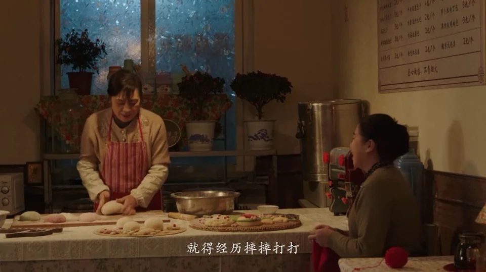
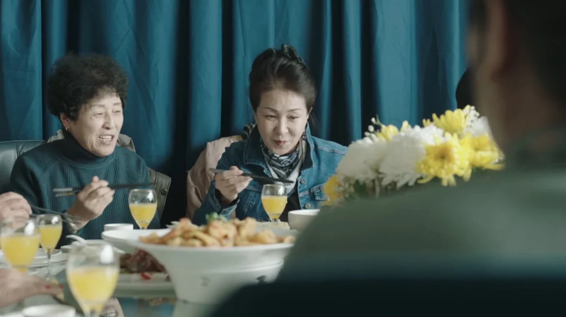
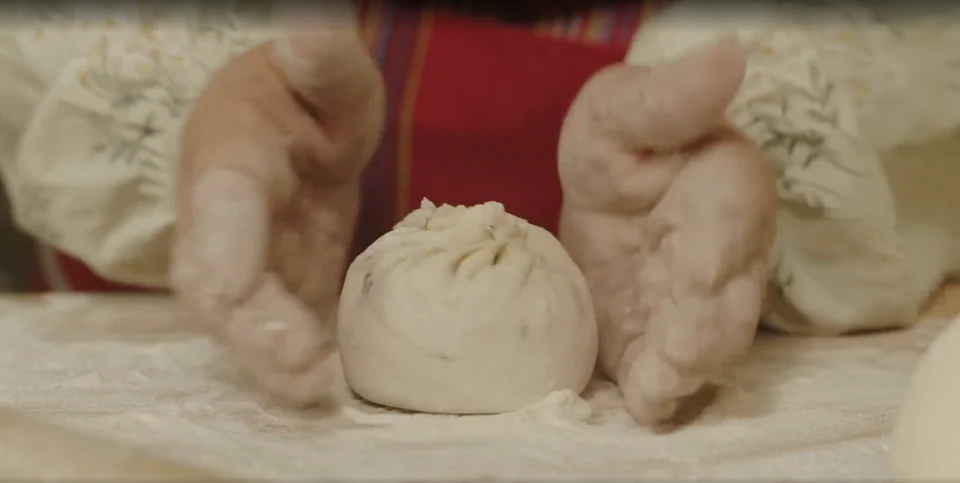
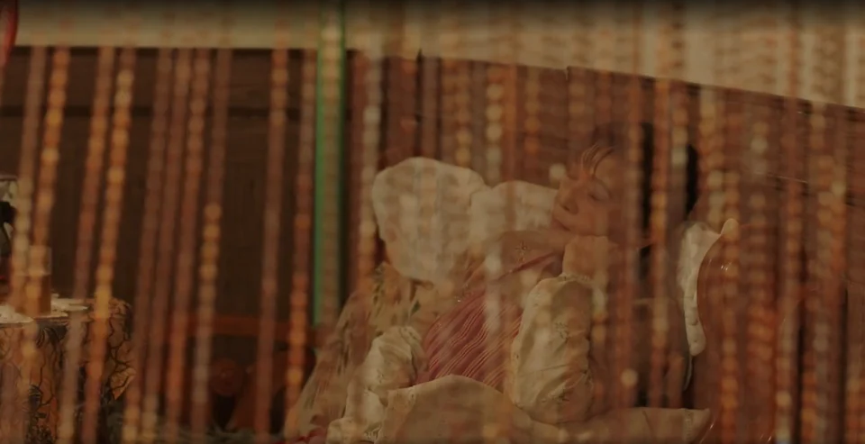
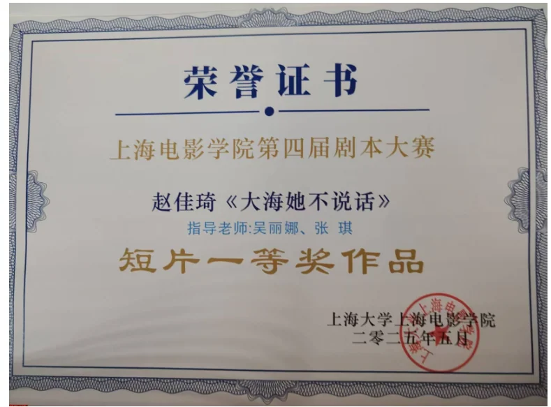

《揉摔搓拉》/《大海她不说话》
类型：女性 成长 温情
一句话故事：
独身馒头店主贺秀琴，一日之间穿行于一场葬礼与一场婚礼，在人情揉摔搓拉的磋磨中，寻得属于自己的生存尊严，明白人生不必活成统一模样。




故事梗概
一天当中，贺秀琴经历了一场白事一场红事，在这中间她悟出了生活的终极奥秘。
贺秀琴是一位性格爽朗、手艺精湛的馒头店主，她将揉面的手艺比作过日子——“得经历了摔摔打打，才能光滑劲道”。她最疼爱的侄女小丽即将订婚，贺秀琴满心欢喜准备参加，却被小丽支吾拒绝。追问之下得知，小丽的未婚夫是周志民的儿子，而周志民正是贺秀琴二十年前有过情感纠葛的故人。
与此同时，贺秀琴最交心的朋友于慧芳突然离世。她去参加慧芳的葬礼，却发现慧芳的弟弟们借丧事大吃大喝、虚情假意，毫无悲痛之意。贺秀琴当场怒斥这群白眼狼，愤而离场。
在葬礼饭店的走廊上，贺秀琴偶遇了周志民。原来小丽的订婚宴就在隔壁包间。周志民坦白：他去世的妻子曾发现他多年来写给贺秀琴的信件，误会两人旧情复燃，病情加重去世；他的儿子周群因此记恨贺秀琴，坚决不许她出席订婚宴。小丽也迫于压力，恳求姑姑不要到。贺秀琴一度想冲进去说清楚，却被周志民以“不想毁了孩子喜事”为由拦住。她站在两个包间之间，一边是虚伪的丧事，一边是排斥她的喜事——最终选择了沉默离开。
夜晚的海边，贺秀琴对着大海向已故的慧芳倾诉：人活着有些话说不出口，但她不愿委屈自己。她回忆起与慧芳的对话——不要孩子不是为任何人，而是过日子是给自己过的。
故事结尾，贺秀琴的馒头店依然热闹。邻居小于来学艺，她再次说出揉面如人生的道理。小于却笑道：“揉不成就做碗疙瘩汤，干啥都得和别人一样啊？”
这是一个关于尊严、孤独与和解的故事。贺秀琴在友情、亲情与旧情的三重失落中，依然选择不委屈自己、不讨好他人，像揉面一样把日子过得光滑劲道。大海沉默不语，但她心中自有答案。
贺秀琴（主角）于慧芳（去世）好友小丽侄女（弟弟的女儿）周志民（妻子去世）初恋儿子周群恋人邻居小于贺秀琴（主角）于慧芳（去世）好友小丽侄女（弟弟的女儿）周志民（妻子去世）初恋儿子周群恋人邻居小于核心人物关系
创作阐述
故事的灵感来源于一个传闻中的“老太太”，前年冬天，寒假回家，晚上和奶奶吃饭的时候突然听她反复念叨：“不行了，她过不去这个冬天了”从奶奶嘴里我了解到一个特别的老太太，在她诸多“奇葩”事迹中有一件最让我感兴趣：裴老太太去相亲，和老头原本聊得好好的，两个人要搬到一块住的时候，裴老太太要求必须结婚，有彩礼，还要办喜事。老头听了以后问，我给你买一床行李，咋俩就一起过呗，这么大岁数还折腾这个？裴老太太听完以后果断摇头拒绝，她有自己的原则和底线。就是这个老太太相亲的故事，我开始关注老年人的情感世界——不是他们“被照顾”的日常，而是他们作为“人”的情感需求、尊严困境和未被言说的内心波澜。我们习惯把老人当作“父母”“祖辈”来对待，却很少把他们当作有爱、有欲、有委屈、有愤怒的独立个体。当社会舆论聚焦于“老年人再婚财产纠纷”“黄昏恋骗局”等猎奇话题时，那些最朴素的情感——对友谊的渴望、对尊严的捍卫、对不被理解的痛苦——反而被遮蔽了。在阅读过相关调查文章后，我决定聚焦一位独身老年女性的生活困境与自我救赎 ”
初版的剧本只是局限于一位老太太想要去相亲，在遇到了有着多种不纯粹相亲动机的老头后看清自己的内心，决定不妥协。在研一的剧作实践课上，张琪老师和编剧班的同学给出我建议：“要去给这些故事一个必须在这儿发生的场景”于是我开始思考，这个故事有没有另一种可能性，第二版剧本《大海她不说话》我将故事限定在一天内，在一家饭店，主角同时经历一场白事与一场红事。二版剧本完成后，我发现主角缺少一些个人的行动，于是在与李远鸿导演的讨论下，我们决定给她一个馒头店店主的身份，并将剧本定名为《揉摔搓拉》，将人生隐喻成面团，纵使生活与外界对自己进行揉摔搓拉，也要坚守住本心，笑对生活。
这个剧本的主题，可以概括为一句话：一个老年女性如何在“被定义”的人生中，重新夺回对自己日子的定义权。贺秀琴是一个馒头店老板娘，没有子女，寡居多年。在旁人眼中，她是个和善的、好说话的老太太，是侄女小丽看大的亲大姑，是老友慧芳最交心的朋友，甚至是被周志民藏在诗歌里的白月光。但没有人真正问过她：你想怎么活？
剧本通过两条线索展开她的困境：
第一条线，是友情与死亡。 慧芳的突然离世，让贺秀琴直面一个残酷的事实：她最在乎的朋友，活着时被家人榨取剩余价值，死后连葬礼都变成了一场荒诞的“家庭聚会”。弟弟们在灵堂前表演悲伤，孩子们把“打狗饼”当零食，没有人真正为慧芳的离去而心痛。贺秀琴在葬礼上的爆发，不只是替朋友鸣不平，更是在为自己的未来呐喊——“你们不就欺负死人不能说话吗？”她害怕自己死后，也会被这样对待。
第二条线，是亲情与背叛。 她从小带大的侄女小丽，订婚时“请求”她不要出席，原因竟是未婚夫的父亲周志民——一个二十年前与她有过情感纠葛的男人。更讽刺的是，周志民把写给她的情诗藏在床底下，被临终的妻子发现，妻子在愤怒与绝望中加速离世。于是，贺秀琴成了“间接害死婆婆”的罪人，被下一代审判、驱逐。她连辩解的机会都没有，因为“不想在喜事儿上闹得不愉快”。面团和揉面是全剧的核心意象。它既是贺秀琴的职业，也是她的人生哲学。开场时她对慧芳说“揉面就像过日子”，结尾时她对小于说同样的话，但小于的回答——“揉不成就做碗香喷喷的疙瘩汤”——打开了新的可能性：人生不必只有一种形状。这是代际之间的对话，也是剧本对“标准答案”的质疑。
这个剧本想说的，不只是“老年人的情感问题”，更是 “我们如何面对自己终将到来的衰老与孤独”。贺秀琴的困境，不是一个老太太的困境，而是每一个不被听见的人的困境。当社会用为你好来绑架你，当亲人用你别问为什么来打发你，当旧情人用“咱们往前看”来逃避责任——你如何保持自己的主体性？你如何不让自己变成“会喘气的家具”？
“揉摔搓拉”这四个字，是贺秀琴的回答：生活把你摔打、揉搓、拉扯，但你可以选择——是把这些变成委屈，还是变成光滑劲道的面团。
获奖证书.

5.完整剧本
《大海她不说话》/《揉摔搓拉》
序幕 夜 内 馒头店
夜晚，门外熙攘着有路人经过，小铺里的吊灯是温暖的昏黄色，照的整个房间弥漫着温馨的气息。窗台的月季花开的正盛。
贺秀琴此刻正在灯下揉面团。
于慧芳坐在桌子边，一边勾着毛衣一边观察贺秀琴揉面团。
贺秀琴手里的面团任她用力，三下五除二就从一滩变成了光滑的一团，贺秀琴揪成小剂子，开始滚动。
于慧芳在另一边啧啧称奇。
于慧芳
诶呦，你这手法真是绝了，我怎么就霍不成这么好的面团呢？
贺秀琴笑而不语。
于慧芳
乐啥？你快说呀——
贺秀琴
你呀，手上没劲，——这揉面就跟人过日子一样，就得经历了摔摔打打，压到一点气孔都没了，这面才光滑了。你看！
于慧芳
这点啊我就服你，心里有数，手上有劲儿。
于慧芳说这句话的时候，贺秀琴正添了一把干面粉洒在面剂子上，然后开始团馒头。
贺秀琴
就这些东西，我闭着眼睛都能伸手就来。
贺秀琴假装闭上眼睛，于慧芳被逗得哈哈笑。
贺秀琴看向于慧芳，于慧芳身后的窗台上是开的正盛的月季花。
贺秀琴
给你劈的花枝子，别忘了拿。
于慧芳顺着贺秀琴的视线看向窗台。
场景二 日 外 馒头店外
早晨，馒头店门口，各色居民正排着队。贺秀琴正站在热气腾腾的几摞蒸屉中因年 纪动作稍显缓慢地帮顾客装馒头，包子。队伍排到一个着急上班的小伙子，小伙子语速飞快的报出一长串要买的东西。
小伙子
这个三个，芹菜的两个，酸菜的五个，酸菜芹菜放一块，还有一袋不放海菜的。
贺秀琴
小伙子，大早上就给表演报菜名呢。
贺秀琴动作没有迟缓，一边打趣他一边就装好了。小伙子嘿嘿笑，扫码。
贺秀琴
二十二，拿好了，海菜刚出锅小心别烫嘴。
场景三 日 内 馒头店
台面上的几个蒸屉都开着盖子，蒸屉里的馒头包子都卖光了，贺秀琴正背身对着店 门口在屋里的桌子上一边和面一边哼着歌。画面先到秀琴屋内镜头，再屋外，卖完了包子通过关系镜头带出来。
小丽走到店门口看铺子的窗户关起来了，就趴在玻璃窗上往店里望，看到正在揉面 的贺秀琴后，开始敲玻璃。
玻璃发出咚咚咚的声音，贺秀琴以为又来了客人。
贺秀琴
(没有转身继续和面，一边大声地应答)
卖没了！卖没了！
小丽还在继续敲着窗户。贺秀琴回头看到小丽以后喜出望外，抖抖手上的面絮，赶紧笑着把门打开给小丽迎进屋里来。
贺秀琴
来了咋没给姑打个电话呀，快进来
小丽走进屋子，贺秀琴赶紧进厨房洗手。
小丽坐在堂屋的椅子上，手有一些不自然的去摸头发。
贺秀琴在厨房里向堂屋的小丽喊话。
贺秀琴
中午啊，就在这儿吃，我刚蒸了豆包。
小丽
姑，我不在这儿吃了。
贺秀琴
死丫头是不是又减肥呢，你看你都瘦了一大圈了，一点儿抵抗力都没有，得亏咱们家这儿风不大，要不然你出门都不用买机票了。
小丽
你别忙叨了，我有事儿想和你说
小丽说话的时候有些心虚。
贺秀琴听到以后赶紧走出来，自然地坐在小丽旁边。
小丽
(低着头，皱着眉咬嘴唇)
我下周会婆家。
贺秀琴
我都知道啦，你爸上周就和我显摆了，你说这时间过得多快呀，咱家小丽一转眼都成大姑娘了要结婚了，等到时候我过去一块帮你掌掌眼——
贺秀琴絮絮叨叨的说着，小丽把手里贺秀琴递过来的水杯突然放下，看着贺秀琴从后槽牙中挤出几个字。
小丽
大姑，你能不能别来，我爸——他不知道情况，吃饭地儿定小了，然后现在也没有别的合适的——
贺秀琴愣住。
贺秀琴
啥玩儿意？我别过去？为啥啊
小丽
吃饭地方坐不下。
贺秀琴
坐不下我订，我订最高档的。
小丽
就是，我对象叫周群，你知道吗？
贺秀琴
（摇头）
你没和我提过啊。
小丽
对，因为他是周志民的儿子，大姑，你明白了啥意思了吗？
贺秀琴
不明白，你有啥说啥，别拐弯抹角了。
小丽
大姑，算我求你，你别来就行，其他的你也别问。
窗台的月季花随着风飘摇，花瓣落下。
房门被甩上，小丽的高跟鞋声远去。
场景四 日 外 馒头店门口
下午四五点钟，夕阳将整个馒头店的门头打亮，客人不如早上的多，贺秀琴就坐在店里勾着毛衣。贺秀琴心绪不宁，总是出神，今天总是勾错针。
小于
问了啊，我就说三年内没有结婚的打算，狠狠搞事业。婶儿，一斤面条。
小于一边打电话一边买东西。
贺秀琴站起来装面条。
小于
就是，上来第一件事是问我有没有对象。
贺秀琴递过去，小于付了钱，俏皮的摆摆手离开。
小于
(画外音)
唉，现在都这样，没招——
贺秀琴目送小于拐进单元门，
贺秀琴又继续坐下来钩毛衣，正勾着又勾错了准备拆了重勾，结 果一用力，钩针断了，贺秀琴拿起电话微信给慧芳发语音条。
贺秀琴
慧芳啊，我是秀琴，你在干嘛？怎么这两天晚上不找我去扭秧歌了呢？
贺秀琴
我有事想和你说啊，今天丽丽来找我了，她不是下周要订婚吗？她让我别去——我就寻思这看大的孩子，怎么能不去呢？我问她为啥，她支支吾吾的说她对象是周志民的儿子，我就纳了闷，这有啥影响吗？我和他都多少年没联系了，慧芳你收到消息给我回话啊——
贺秀琴刚准备发下一条语音，突然手机振动，对面发来消息。
于慧芳
（微信语音条）
我姨她走了……
贺秀琴在看到后表情一下子凝住了，扶着边上的桌子一下瘫在椅子上。眼泪断线柱子一样掉下来。用手扶着胸口，喘不上气。
场景五 夜 内 贺秀琴家
窗外夕阳渐渐地沉下去，屋子里没有开灯一点点暗下来，贺秀琴走到窗台边把花盆房子地上，用手批下一颗花叉，从阳台拿来一个瓶子，倒上水，把花叉泡进去。分出来的叉子放在花盆旁边。
做完这一切，贺秀琴对着花长长的叹了口气。
场景六 日 外 馒头店门口
贺秀琴“咔嗒 ”一声锁上店门，馒头店打烊，贺秀琴挎着个褪了色的灰 布包离开。
场景七 日 外 海边
沿着蜿蜒的海岸线，她踽踽独行。天气不是很好，不见一点阳光，灰蒙蒙的，海边也开始起风。
海风揉乱她额前的碎发，缠绕着衣角。她微微低着头，眉宇间凝结着化不开的愁绪， 任凭风扑打着面颊，步履沉沉地，迎着风，继续向前走去。单薄的身影在辽阔的海天背景里，愈显孤单。
海边广场，父母带着小朋友在放风筝。
场景八 日 内 乐哈哈饭店
乐哈哈饭店门口支着（订婚）双人立牌，上面幸福的玩偶小人紧紧贴在一起。饭店 一楼人群进进出出。门口的桌子边围坐着一群服务员，每个人手边都有一袋红色袋子的喜糖。
贺秀琴
这是，于家办白事儿的地儿吗？
一个年轻圆脸的服务员笑着点点头，指了指左边的楼梯。
服务员甲
顺着楼梯上去，左手边那屋，别走错了大姨——
贺秀琴点点头。
服务员乙
楼上不是订婚的吗？
服务员甲
（无奈地耸耸肩）
撞了呗。
两个人凑在一起说悄悄话。
贺秀琴上楼。
场景九 日 内 乐哈哈饭店二楼 左边包房
贺秀琴一上二楼楼梯，面前是一个屏风，隔开两个选择。
右侧包房门紧闭着。
左侧包房的门是开着的，门口挂着白布条。
左边包厢门口放着一张小桌，坐着两个女人，登记礼账。
贺秀琴站在楼梯口，左侧包间门口的一个较年轻女人注意到她，迎了上去。
于湘与
婶，你来了——
贺秀琴上前一把拉住年轻女人的手，满面愁容。
贺秀琴
孩子，这拿着。你大姑是我最交心的朋友了，好好的怎么说走就走呢。
贺秀琴把准备好的白包塞在于湘与手里。
于湘与
唉，大姑走得急，但是一点儿没遭罪，有福呢。
于湘与说完以后面带笑意看着贺秀琴。然后把贺秀琴手里的红包抽了出来。
贺秀琴
是，是啊——
于湘与
进去坐吧。
贺秀琴
哎，孩子，这个也给你。
贺秀琴打开塑料袋，里面是几个白花花的馒头，上面缠着几圈黑线。
于湘与跟着贺秀琴进屋，随手把馒头扔在了门口小桌子上。
场景十 日 内 饭店二楼左边包厢
贺秀琴走进去，面前是两桌人，一桌男人在大声唠嗑，唾沫飞溅。另一桌女人嗑瓜 子闲聊天。贺秀琴坐在了两张桌子交界的地方，背靠着男人，面朝着女人这桌，正对面是窗口，窗台上放着几盆花花草草，其中一盆就是月季花。
包房的窗户上还有上场婚礼的残存的半个喜字，忘记揭下。
正对着门口的桌上已经端上了几道冷菜，还摆着几瓶红色瓶子装的白酒。慧芳家的 亲戚在正对门口的主桌上聊天。正中间慧芳的二弟于德成大咧咧地坐着，一根接着 一根的抽着烟，周围被烟熏得雾蒙蒙的。慧芳的三弟于德工和于德工的儿子坐在另 一边，于德工正在嗑着瓜子，瓜子皮吐得满地都是。于德工的儿子在用手机打麻将，一边玩一边大呼小叫。几个孙子辈的小孩满屋子跑。慧芳生前的朋友也三三两两坐在桌上围着小圈在聊天。
贺秀琴一走进屋就被烟味呛得不行。桌上喝酒的男人们咋咋呼呼地喝酒吹牛，于德工喝得满脸通红，把上衣都脱了。
于德成和旁边人继续攀谈。猛抽了一口烟，然后吐出来，贺秀琴被呛得只咳嗽，打量周围的环境。
小孙子闹着不肯吃饭，于湘与一勺一勺哄着他吃。
贺秀琴坐在桌边没有什么胃口。
于德成
大姐在的时候就疼老三，哪次买菜卖肉少了你们家。
于德工
这话不假啊，哥你这小孙子小孙女一放假不就 送到大姐家让大姐看，你看！这线衣还是大姐 勾的呢！大姐这一走，我心里难受啊。
(呜呜地哭起来)
于德成
现在咱们两兄弟得彼此照顾着呢。
(也呜呜哭起来，只听哭声不见泪)
路人丙（男）
你们这一家子多亲呢，你大姐在下面也能安心呢。
于德成
大姐走之前总惦记我们家这两个小崽，说等他们上了小学中午就去她家吃，离得近。
于德工
是啊，大姐最惦记这些小辈了，前两天还给我打电话问他侄儿啥时候成家，说是能帮一把帮一把。
年轻的男人还在打游戏，于德工一拍脑袋。
于德工
诶呀，都忘了放炮了，你快去，送你大姑一程。
于德工怼了一下身旁年轻男人，男人不情不愿地收起手机，下楼放炮仗。
于德成听到于德工的话也不继续往下接茬了。
于德成
大家伙能来就算是给我们家面子，咱们一起走一个，送送我姐。
众人端起酒杯碰了一个。酒杯碰撞的瞬间，于德成孙子把筷子摔在碗边叮当一 声，闹着不吃饭。一骨碌跑到了于德成的旁边。
于德成
来来来。
于德成用筷子沾白酒抿到小孙子舌头上。小孙子被辣得龇牙咧嘴，哇的一声哭出 来。于德成和于德工哈哈大笑。
于德成
吃口菜就好了。
于德成夹菜塞到小孙子嘴里，小孙子把头别过去，指着一边贺秀琴带来的袋子。
小孙子
我要吃包包。
于德成
啥？
小孙子几步跑到小桌子旁，拿出来两个馒头， 自己啃一个递给于德成一个。
于德成喝得满脸通红，刚想拿起馒头啃一口，发现上面绑着几圈绳子，突然变得暴 怒。
于德成
这什么馒头？
于德成说完以后，原本正在和旁边人唠嗑的众人看到小孙子啃得只剩一半的馒头也 脸色一变，惊叫一声。
于德成媳妇
诶呀！快吐了，这是上供的，给死人拿着打狗的馒头。
贺秀琴这才回神注意到于湘与说的馒头是她带来的打狗饼。
于湘与听到于德成媳妇的话以后忙把碗放在桌上，用手去扣小孙子的嗓子眼让他吐 出来，小孙子开始哇哇大哭，小孙女一听是打狗的馒头，顺着人群钻到了桌子旁拿 了两个。
于德成暴怒地拍得桌子咚咚响。
于德成
给死人的拿来给我吃？他娘的。
于湘与剜了一眼贺秀琴。
小孙女从人群中钻了出来两只手各抓着一个馒头，一边说一边往男人吃饭的桌上扔
小孙女
打狗了！打狗了！
场面混乱成一团。
小孙女扔完馒头以后跑向窗边，不小心碰到了花盆，花盆砰的一声砸了下来，贺秀琴一把抱起了摔倒的孩子，摔碎的花盆里种的就是一棵月季，这一棵月季的叶 是翠绿的，在满地的土里显得很突兀。
屋子里一下子安静了下来，贺秀琴冷着脸坐下，冲满屋子人说话。
贺秀琴
我是不是走错了，这是老于家办白事儿的地方吗？
于湘与
是啊，婶儿。
贺秀琴
没走错吗？那这屋子里咋仙气缭绕的，大家都挺乐呵的。
于湘与
（尬笑）
婶，你说啥呢。
贺秀琴
（挥挥手散开烟，语气阴阳）
我寻思王母娘娘在天庭开会呢。
于德成
大姐，你啥意思啊？
贺秀琴
没啥意思啊，就是感觉你大姐真是供出来一堆白眼狼，活着的时候你们问都不问一句，管都不关，家里有事跑的比谁都快，死了想起来了，想来尽孝心了，尽给鬼啊。
屋子里安静下来。两个男人气的脸通红。
于德成愤怒的拍桌子。
于德成
你闭嘴！
贺秀琴
你们不就欺负死人不能说话吗？我替她说，呸！恶心！
房门被敲响，服务员端着果盘。
服务员
您好，上一下果盘。
贺秀琴
哼，看看，蟠桃都端上来了。
这个时候外面的炮仗声咚——咚——咚，震天响。
贺秀琴猛地站起来，拿着包离开。
场景十一 日 内 乐哈哈二楼楼梯口
贺秀琴低着头往楼梯走，此刻右手边挂白布的房门紧闭着。左手边的包间门虚掩 着，门口是一对情侣的人形立牌。
周志民站在走廊口准备抽烟，贺秀琴看到他挡住走廊口。
周志民回身。
周志民一脸惊喜，贺秀琴一脸诧异。
贺秀琴
老周？
周志民
（先是惊喜然后撇了一眼门口迅速收回头）
秀琴，你不是有事儿来不了吗？你咋来了？
贺秀琴顺着他视线的方向扭头看另一个包间，包间的门口立着一对依偎着的人形立牌。
贺秀琴
是小丽和你儿子吗？
周志民
（点点头）
是，小丽是个特别好的孩子，咱们真是有缘分，没想到还能凑成一家子。
贺秀琴
是这俩孩子有缘分，和咱们有啥关系。
去放鞭炮的侄子低着头打游戏上楼，贺秀琴瞪了一眼。
周志民
（再撇一下门口）
对——咱们下楼说吧，这块人来人往的。
周志民拉着贺秀琴就要下楼。
贺秀琴注意到周志民紧张的神色。
贺秀琴
老周，孩子亲大姑来了，怎么不请我进去坐坐。
周志民
里面，这个我儿子说，老周之后有机会肯定见面，这——
周志民紧张地结巴。
贺秀琴
（冷脸）
你把话说清楚，为什么不让我过来。
贺秀琴声音拔高。
周志民
咱们下楼说，下楼我和你说。
场景十二 日 内 乐哈哈饭店一楼门口
周志民
孩子妈妈去年去世了，脑瘤，这孩子和他妈亲，咋俩的事，他心里有坎，就不想让你过来吃饭。
贺秀琴
咋俩有什么事儿？
周志民
就我们以前不是——贺秀琴
咱们都二十年没联系了吧，和我有什么关系。
周志民
这孩子轴，脑袋不拐弯，认死理。
贺秀琴
（冷笑）
你实话实说，到底因为什么。
周志民
就因为这个——
贺秀琴
行。
贺秀琴作势就要上楼去问，周志民赶紧拦住他。
周志民
我告诉你，就是去年他妈去世的时候翻床底下，发现我这些年写给你的诗啊，信啊什么的，他妈就发了疯，觉得咋俩还有事儿，就严重了，没多久就去世了。但是她本来就有脑瘤，也就是那时候的事儿。
贺秀琴
你也配当个人。
周志民
是我的错，我不该让她看见的。老周，这事情都过去了，咱们不都得往前看吗，你今天来不就是心里还有我吗，等我再去做做小群的工作，咱们——
贺秀琴直接挥包打在周志民身上。
贺秀琴
那是你妻子啊，你这么对她，你是个人吗？你还往我身上泼脏水，连带着我被记恨，我必须说清楚。
贺秀琴要往楼上走。
周志民挡住她。
周志民
别去别去，小群看到你肯定得炸。
贺秀琴还是要上楼。
周志民
你也不想在小丽喜事儿上闹得大家都不愉快吧。这是你亲侄女，你看大的孩子。
贺秀琴在听到这句话以后顿住了脚步。
楼梯口传来周群的声音。
周群
爸，爸你快来，小丽要敬你酒。爸！
贺秀琴和周志民都听到了，周志民漏出祈求的表情。
周志民
小丽也不想让你去啊。
贺秀琴回忆起小丽去找她的情境。
场景三 日 内 馒头店
小丽看着贺秀琴祈求地说。
小丽
大姑，算我求你，你别来就行，其他的你也别问。
周群
（屋里传来声音）
爸！
周志民
快走吧——小群，我在这儿呢！
周志民赶紧往饭店走，留下贺秀琴一个人站在门口的花坛边，风中凌乱，地上是那株月季花苗，因为刚才用包打周志民，不小心掉在地上。
贺秀琴就一直盯着地上的花苗。
贺秀琴捡起花枝，往饭店走。
场景十三 日 内 乐哈哈饭店二楼
贺秀琴站在门口，迟疑着想推开门又放下手。
小丽
（声音从屋内传来）
爸，我敬你！
贺秀琴挣扎过后转身下楼。
场景十四 夜 外 海边
傍晚，贺秀琴一个人往家走。
海风猎猎地吹起她的头发。
场景十五 夜 内 馒头店
和序幕的场景一样，傍晚时分，贺秀琴在桌子边上揉着面团，慧芳搬了凳子坐在桌子边一边勾着毛衣一边看贺秀琴揉面。
于慧芳
我试试？
贺秀琴
来呀。
于慧芳洗了手帮贺秀琴和面。
贺秀琴包了几个大馅的豆沙包。
于慧芳
给小丽留的？
贺秀琴
她从小就爱吃，咋吃都没够。
两个人都被逗得哈哈笑。
慧芳
秀琴，你这么疼小丽，就不想要个自己的孩子。
贺秀琴
想啊，我最稀罕小孩了。
慧芳
那咋——你是为了？
贺秀琴
(摇头)
打住！我可不是为了哪个人，我就是想开了，过日子谁过给自己看的，我怎么舒服怎么来，我要我能做得了主。
贺秀琴把面前的面团压扁。
慧芳
你想的开，我这辈子算是这样了。
慧芳手里的面团不成型，全是面絮。
贺秀琴
可别这么想，过一天就得赚一天。这玩儿意就像和面，面多了加水，水多了加面，都在你自己手里头呢。只要你想，啥时候都不算晚。
贺秀琴往慧芳的撒一把面粉，说完话以后，面团成型。
场景十四 夜 外 海边
贺秀琴继续往回走，夜晚路过海边，驻足看，看着面前的浪花翻涌而来又撤回。
贺秀琴把缠着线的馒头放在十字路口，笑着埋怨。
贺秀琴
慧芳啊，我今天替你狠狠地骂了一顿你那两个弟弟，你不知道他气成啥样了。这人死了，就张不开嘴了，人活着，有些话也很难说出来。道理我心里清楚着呢，
（停顿）
可我不愿意，我不愿意委屈自己——
场景十三 日 内 乐哈哈饭店二楼
贺秀琴准备下楼，转头看向慧芳办白事的包间。下定决心扭头回去，推开对面的门。
结束回忆，贺秀琴泪流满面，海风吹散她额前碎发。
贺秀琴
你说，过好自己个儿的日子咋就这么难呢？你是看透了先我一步享福去了，保守估摸着还得个二十来年，最低标准也得让我活到八十，我才能把这边日子过完，到时候你那边准备的应该也差不多了，我就去找你也享享福去。你且记住我的话，院前院后别光种菜，种点儿花，喜庆，还有别上鸡粪，太臭。
场景十六 日 外 馒头店里
门口的门紧锁着有些冷清的感觉，镜头推进，屋里却充满欢声笑语。（做一个反差）
邻居小于坐在小板凳的位置上看贺秀琴和面。
小于
贺婶，我妈让我来偷偷艺。
贺秀琴
你妈心眼子真多，这是要教会徒弟饿死师傅呗。
小于
就怕徒弟太笨，没等学会先饿死了。
贺秀琴
来，试试。
小于上手和面。
贺秀琴
这里头道道可多了，这揉面啊就跟人过日子一样，得经历反复挤压，翻来覆去，才能揉出光滑劲道的好面团。
小于洗了手挽着袖子开始揉盆里发好的面，揉了几次都不成团。
贺秀琴上手帮她。
小于
婶，也不一定都得做面团，揉不成就做碗香喷
喷的疙瘩汤，干啥都得和别人一样啊。
贺秀琴
(用手指了指桌上分好的馒头剂子)
是啊，还能做发面饼呢。
两个人笑成一团。
场景十七 日 内 馒头店内
馒头店窗台摆着一盆开得正浓正艳的月季花，它旁边的花盆里是另一颗刚载好的。镜头缓缓拉远，窗外是喧闹着的人来人往的社区。
——完——